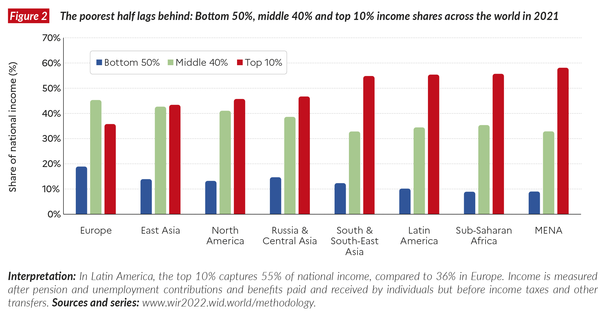

15 Developing Countries Growth, Crisis, and Reform
15.0.1 The gap between rich and poor
World Bank classify the countries into four categories according to their level of income.

The World Bank assigns the world’s economies to four income groups—low, lower-middle, upper-middle, and high income. The classifications are updated each year on July 1 and are based on the GNI per capita of the previous year (2021). GNI measures are expressed in United States dollars (USD).
Low income: most sub-Saharan Africa, India, Pakistan
Lower-middle income: China, Caribbean countries
Upper-middle income: Brazil, Mexico, Saudi Arabia, Malaysia, South Africa, Czech Republic
High income: U.S., Singapore, France, Japan, Kuwait
15.0.2 Has the world income gap narrowed over time?
While some previously middle- and low-income economies have grown faster than high-income countries, and thus have “caught up” with high- income countries, others have languished. The income levels of high-income countries and some previously middle-income and low-income countries have converged. But the some of the poorest countries have had the lowest growth rates.
15.0.2.1 Inequality within countries: Gini index
The Gini index is a measure of how equal a country’s distribution of income is. It is a score between 0 and 1, where 0 represents perfect equality and 1 represents perfect inequality. Perfect equality means a country’s total income is shared equally among its residents, whereas perfect inequality means a country’s total income is owned by a single individual.
For example, you can see that South Africa is (by this measure) the most unequal country in the world with a Gini index of 0.63
15.0.2.2 Inequality between countries
Over the last two decades global inequalities between countries have declined, income inequality has increased within most countries. Inequality varies significantly between the most equal region (Europe) and the most unequal (Middle East and North Africa i.e. “MENA”). In Europe, the top 10% income share is around 36%, whereas in “MENA” it reaches 58%. In between these two levels, we see a diversity of patterns. In East Asia, the top 10% makes 43% of total income and in Latin America, 55%.

15.0.2.3 How bad is extreme poverty globally?
It is true that ~700 million people around the world live on less than $1.90 USD per day. This forces people to make impossible choices for themselves and their families regarding healthcare, food, water, education, and housing. As a result, ~14,500 children under the age of five die every day from completely preventable causes, such as malaria, diarrhea, or malnutrition.
15.0.2.4 The impact of the COVID-19 pandemic on income inequality
2020 marked the steepest increase in the global billionaires’ share of wealth on record, the report found. Indeed, since 1995, the share of global wealth owned by billionaires’ has risen from 1% to over 3%.
15.0.3 Structural features of developing countries
What causes poverty is a difficult question, but low-income countries have at least some of following characteristics, which could contribute to poverty:
- Government control of the economy
- Restrictions on trade
- Direct control of production in industries and a high level of government purchases relative to GNP
- Direct control of financial transactions
- Reduced competition reduces innovation; lack of market prices prevents efficient allocation of resources
- Unsustainable macroeconomic policies that cause high inflation and unstable output and employment
- If governments cannot pay for debts through taxes, they can print money to finance debts.
- Seigniorage is paying for real goods and services by printing money.
- Seigniorage generally leads to high inflation.
- High inflation reduces the real cost of debt that the government has to repay and reduces the real value of repayments for lenders.
- High and variable inflation is costly to society; unstable output and employment is also costly.
- Lack of financial markets that allow transfer of funds from savers to borrowers
- Banks frequently lend funds to poor or risky projects.
- Loans may be made on the basis of personal connections rather than prospective returns, and government safeguards against financial fragility, such as bank supervision, tend to be ineffective due to incompetence, inexperience, and outright fraud.
- Usually harder in developing countries for shareholders to find out how a firm’s money is being spent or to control firm managers.
- The legal framework for resolving asset ownership in cases of bankruptcy typically is also weak.
- Natural resources or agricultural commodities make up an important share of exports for many developing countries.
- For example, Russian petroleum, Malaysian timber, South African gold, and Colombian coffee.
- Attempts to circumvent government controls, taxes, and regulations have helped to make corrupt practices such as bribery and extortion a way of life in many developing countries.
- Due to government control of the economy and weak enforcement of economic laws and regulations, underground economies and corruption flourish.
15.0.4 Developing-country borrowing and debt
Another common characteristic for many low- and middle-income countries is that they have traditionally borrowed from foreign countries.
- Financial asset flows from foreign countries are able to finance investment projects, eventually leading to higher production and consumption.
- But some investment projects fail and other borrowed funds are used primarily for consumption purposes.
- Some countries have defaulted on their foreign debts when the domestic economy stagnated or during financial crises.
- But this trend has recently reversed as these countries have begun to save.
15.0.5 The problem of default
- A financial crisis may involve
- a debt crisis: an inability to repay sovereign (government) or private sector debt.
- a balance of payments crisis.
- a banking crisis: bankruptcy and other problems for private sector banks.
- A debt crisis in which governments default on their debt can be a self-fulfilling mechanism.
- Fear of default reduces financial asset inflows and increases financial asset outflows (capital flight), decreasing investment and increasing interest rates, leading to low aggregate demand, output, and income.
- Financial asset outflows must be matched with an increase in net exports or a decrease in official international reserves in order to pay individuals and institutions who desire foreign funds.
- Otherwise, the country cannot afford to pay those who want to remove their funds from the domestic economy.
- The domestic government may have no choice but to default on its sovereign debt (paid for with foreign funds) when it comes due and when investors are unwilling to reinvest.
- In general, a debt crisis can quickly magnify itself: it causes low income and high interest rates, which make government and private sector debts even harder to repay.
- High interest rates cause high interest payments for both the government and the private sector.
- Low income causes low tax revenue for the government.
- Low income makes loans made by private banks harder to repay: the default rate increases, which may cause bankruptcy.
15.0.6 Alternative forms of financial inflow
Bond finance: government or private sector bonds are sold to foreign individuals and institutions.
Bank finance: commercial banks or securities firms lend to foreign governments or foreign businesses.
Official lending: the World Bank, Inter-American Development Bank, or other official agencies lend to governments.
- Sometimes these loans are made on a “concessional” or favorable basis, in which the interest rate is low.
- Foreign direct investment: a firm directly acquires or expands operations in a subsidiary firm in a foreign country.
- A purchase by Ford of a subsidiary firm in Mexico is classified as foreign direct investment.
- Portfolio equity investment: a foreign investor purchases equity (stock) for his portfolio.
- Privatization of government-owned firms in many countries has created more equity investment opportunities for foreign investors.
15.0.7 The debt crisis of the 1980s
In the 1980s, high interest rates and an appreciation of the U.S. dollar caused the burden of dollar-denominated debts in Argentina, Mexico, Brazil, and Chile to increase drastically.
A worldwide recession and a fall in many commodity prices also hurt export sectors in these countries.
In August 1982, Mexico announced that it could not repay its debts, mostly to private banks.
The U.S. government insisted that the private banks reschedule the debts, and in 1989
Mexico was able to achieve a reduction in the interest rate an extension of the repayment period a reduction in the principal by 12%
Brazil, Argentina, and other countries were also allowed to reschedule their debts with private banks after they defaulted.
15.0.8 East Asia: Success and crisis
Before the 1990s, Indonesia, Korea, Malaysia, Philippines, and Thailand relied mostly on domestic saving to finance investment.
But afterwards, foreign funds financed much of investment, and current account balances turned negative.
Despite the rapid economic growth in East Asia between 1960 and 1997, growth was predicted to slow as economies “caught up” with Western countries.
15.0.9 The Asian financial crises
Weak enforcement of financial regulations and a lack of monitoring caused commercial firms, banks, and borrowers to engage in risky or even fraudulent activities: moral hazard.
Nonexistent or weakly enforced bankruptcy laws and loan contracts worsened problems after the crisis started.
The East Asian crisis started in Thailand in 1997, but quickly spread to other countries. Malaysia, Indonesia, Korea, and the Philippines soon faced speculations about the value of their currencies.
Most debts of banks and firms were denominated in U.S. dollars, so that devaluations of domestic currencies would make the burden of the debts in domestic currency increase.
To maintain fixed exchange rates would have required high interest rates and a reduction in government deficits, leading to a reduction in aggregate demand, output, and employment.
All of the affected economies except Malaysia turned to the IMF for loans to address the balance of payments crises and to maintain the value of the domestic currencies. Malaysia instead imposed controls on flows of financial assets so that it could increase its money supply (and lower interest rates), increase government purchases, and still try to maintain the value of the ringgit.
Because consumption and investment expenditure decreased with output, income, and employment, imports fell and the current account increased after 1997.
15.0.10 Lessons of crises
Fixing the exchange rate has risks: governments desire to fix exchange rates to provide stability in the export and import sectors, but the price to pay may be high interest rates or high unemployment.
Weak enforcement of financial regulations can lead to risky investments and a banking crisis when a currency crisis erupts or when a fall in output, income, and employment occurs.
Liberalizing financial asset flows without implementing sound financial regulations can lead to capital flight when investments lose value during a recession.
The importance of expectations: even healthy economies are vulnerable to crises when expectations change.
15.0.11 Preventative (“prophylactic”) measures:
- Better monitoring and more transparency: more information allows investors to make sound financial decisions in good and bad times.
- Stronger enforcement of financial regulations: reduces moral hazard.
- Deposit insurance and reserve requirements.
- Increased equity finance relative to debt finance.
- Increased credit for troubled banks through central banks or the IMF?
15.0.12 Summary
- Some countries have grown rapidly since 1960, but others have stagnated and remained poor.
- Many poor countries have extensive government control of the economy, unsustainable fiscal and monetary policies, lack of financial markets, weak enforcement of economic laws, a large amount of corruption, and low levels of education.
- Many developing economies have traditionally borrowed from international capital markets, and some have suffered from periodic sovereign debt crises, balance of payments crises, and banking crises.
- Sovereign debt, balance of payments, and banking crises can be self-fulfilling, and each crisis can lead to another within a country or in another country.
- Fixing exchange rates may lead to financial crises if the country is unwilling to restrict monetary and fiscal policies.
- Fixing exchange rates may lead to financial crises if the country is unwilling to restrict monetary and fiscal policies.
- Weak enforcement of financial regulations causes a moral hazard and may lead to a banking crisis, especially with free movement of financial assets.
- Geography and human capital may influence economic and political institutions, which in turn may affect long-term economic growth.